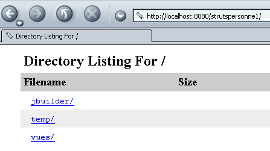
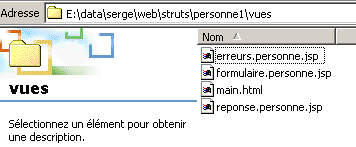
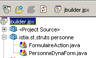
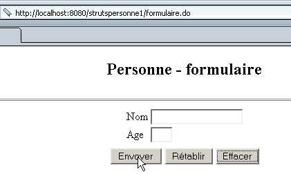
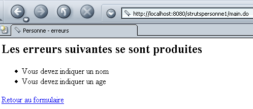
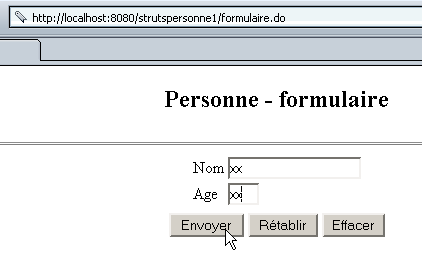
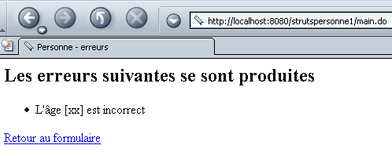
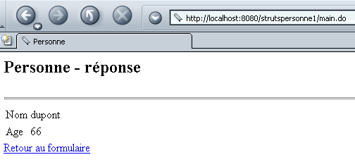

4. 动态表单的使用
4.1. 动态表单的声明
我们已经看到，Struts 使用 ActionForm 对象来存储由应用程序中不同 Servlet 处理的 HTML 表单的值。 对于应用程序中的每个表单，我们需要构建一个从 ActionForm 派生的类。这很快会变得相当繁琐，因为对于每个字段 xx，我们都需要编写两个方法 setXx 和 getXx。Struts 允许我们使用表单
- ，其结构在 struts-config.xml 文件的 <form-beans> 部分中声明
- 中声明的结构，这些表单将由 Struts 环境根据声明的结构动态生成
因此，用于存储 strutspersonne 应用程序中姓名和年龄值的类可以定义如下：
<form-beans>
<form-bean name="frmPersonne" type="org.apache.struts.actions.DynaActionForm">
<form-property name="nom" type="java.lang.String" initial=""/>
<form-property name="age" type="java.lang.String" initial=""/>
</form-bean>
</form-beans>
对于表单的每个字段，我们定义一个带有两个属性的 <form-property> 标签：
- name：字段名称
- type：其 Java 类型
由于Web客户端提交的表单值均为字符串，因此最常用的类型是：单选字段使用java.lang.String，多选字段（同名复选框、多选列表等）使用java.lang.String[]。 类 DynactionForm 与类 ActionForm 一样，其 validate 方法默认不执行任何操作。若要使其验证表单参数的有效性，需继承该类并自行编写 validate 方法。因此，表单的声明如下：
<form-beans>
<form-bean name="frmPersonne" type="istia.st.struts.personne.PersonneDynaForm">
<form-property name="nom" type="java.lang.String" initial=""/>
<form-property name="age" type="java.lang.String" initial=""/>
</form-bean>
</form-beans>
istia.st.struts.personne.PersonneDynaForm 类需由我们编写。
4.2. 编写与动态表单关联的类 DynaActionForm
在上文中，我们已将类 istia.st.struts.personne.PersonneDynaForm 关联到表单（姓名、年龄）。现在我们编写该类：
package istia.st.struts.personne;
import javax.servlet.http.*;
import org.apache.struts.action.*;
public class PersonneDynaForm extends DynaActionForm {
// 验证
public ActionErrors validate(ActionMapping mapping, HttpServletRequest request) {
// 错误处理
ActionErrors erreurs = new ActionErrors();
// 姓名字段不能为空
String nom = (String)this.get("nom");
if (nom == null || nom.trim().equals("")) {
erreurs.add("nomvide", new ActionError("personne.formulaire.nom.vide"));
}
// 年龄字段不能为空
String age = (String)this.get("age");
if (age == null || age.trim().equals("")) {
erreurs.add("agevide", new ActionError("personne.formulaire.age.vide"));
}
else {
// 年龄必须为正整数
if (!age.matches("^\\s*\\d+\\s*$")) {
erreurs.add("ageincorrect", new ActionError("personne.formulaire.age.incorrect", age));
// 返回错误列表
}
} //if
// 返回错误列表
return erreurs;
}
}//类
需要注意的要点如下：
- 该类继承自 DynaActionForm
- DynaActionForm 类的 validate 方法已被重写。当该方法由 Struts 控制器执行时，会构建 PersonneDynaForm 对象。该对象包含一个字典，其键为表单字段 name 和 age，值为这些字段的实际值。 要在 DynaActionForm 的方法中访问某个字段，需使用 Object get(String nomDuChamp) 方法。若要为字段设置值，可使用 void set(String nomDuChamp, Object 值) 方法。 完整的定义请参阅 DynaActionForm 类的定义。
- 获取表单中 nom 和 age 字段的值后，validate 方法与表单关联 ActionForm 对象时编写的方法并无二致。
4.3. 新类 FormulaireAction
配置文件定义了以下 /main 操作：
...
<form-beans>
<form-bean name="frmPersonne" type="istia.st.struts.personne.PersonneDynaForm">
<form-property name="nom" type="java.lang.String" initial=""/>
<form-property name="age" type="java.lang.String" initial=""/>
</form-bean>
</form-beans>
....
<action
path="/main"
name="frmPersonne"
scope="session"
validate="true"
input="/erreurs.do"
type="istia.st.struts.personne.FormulaireAction"
>
<forward name="reponse" path="/reponse.do"/>
</action>
此定义与strutspersonne应用程序中的定义相同。/main操作由类型为FormulaireAction的对象执行。该对象通过类型为FormulaireBean的对象接收来自表单frmPersonne的值。 现在，它通过类型为 PersonneDynaForm 的对象接收这些值。因此需要重写该类：
package istia.st.struts.personne;
import org.apache.struts.action.Action;
import org.apache.struts.action.ActionMapping;
import org.apache.struts.action.ActionForm;
import org.apache.struts.action.ActionForward;
import javax.servlet.http.HttpServletRequest;
import javax.servlet.http.HttpServletResponse;
import java.io.IOException;
import javax.servlet.ServletException;
import istia.st.struts.personne.PersonneDynaForm;
public class FormulaireAction extends Action {
public ActionForward execute(ActionMapping mapping, ActionForm form,
HttpServletRequest request, HttpServletResponse response) throws IOException,ServletException {
// 表单有效，否则不会到达此处
PersonneDynaForm formulaire=(PersonneDynaForm)form;
request.setAttribute("nom",formulaire.get("nom"));
request.setAttribute("age",formulaire.get("age"));
return mapping.findForward("reponse");
}//执行
}
需要注意的要点如下：
- 我们必须导入包含表单数据的类 PersonneDynaForm，才能访问其定义
- execute方法通过[DynaActionForm].get方法获取表单参数的值。
对于 strutspersonne 应用程序中的 FormulaireAction 类，仅表单值的访问方式发生了变化。
4.4. strutspersonne1 应用程序的部署与测试
4.4.1. 创建上下文
我们将这个新应用程序命名为 strutspersonne1。我们在 Tomcat 的 <tomcat>\conf\serveur.xml 文件中创建了一个新定义：
完成上述操作后，需重启 Tomcat。可通过访问 URL 来验证上下文的有效性：
http://localhost:8080/strutspersonne1/

4.4.2. 视图
将 strutspersonne 应用程序的 views 文件夹复制到 strutspersonne1 应用程序的文件夹中。因为视图没有变化。

4.4.3. 类编译
我们需要创建两个类：PersonneDynaForm 和 FormulaireAction，后者调用前者。我们可以使用 JBuilder 项目来创建并编译它们：

4.4.4. WEB-INF 文件夹
我们将 strutspersonne 应用程序中的 WEB-INF 文件夹复制到 strutspersonne1 应用程序的文件夹中。部分文件会发生变化：

配置文件 struts-config.xml 变为如下内容：
<?xml version="1.0" encoding="ISO-8859-1" ?>
<!DOCTYPE struts-config PUBLIC
"-//Apache Software Foundation//DTD Struts Configuration 1.1//EN"
"http://jakarta.apache.org/struts/dtds/struts-config_1_1.dtd">
<struts-config>
<form-beans>
<form-bean name="frmPersonne" type="istia.st.struts.personne.PersonneDynaForm">
<form-property name="nom" type="java.lang.String" initial=""/>
<form-property name="age" type="java.lang.String" initial=""/>
</form-bean>
</form-beans>
<action-mappings>
<action
path="/main"
name="frmPersonne"
scope="session"
validate="true"
input="/erreurs.do"
type="istia.st.struts.personne.FormulaireAction"
>
<forward name="reponse" path="/reponse.do"/>
</action>
<action
path="/erreurs"
parameter="/vues/erreurs.personne.jsp"
type="org.apache.struts.actions.ForwardAction"
/>
<action
path="/reponse"
parameter="/vues/reponse.personne.jsp"
type="org.apache.struts.actions.ForwardAction"
/>
<action
path="/formulaire"
parameter="/vues/formulaire.personne.jsp"
type="org.apache.struts.actions.ForwardAction"
/>
</action-mappings>
<message-resources parameter="ressources.personneressources"/>
</struts-config>
该文件与strutspersonne应用程序中的文件完全相同，仅表单的动态定义部分（框选部分）有所不同。
在 WEB-INF/classes 文件夹中，将放置由 JBuilder 编译的类：

在文件夹 WEB-INF\classes\ressources 中，放置消息文件。该文件未作更改。
personne.formulaire.nom.vide=<li>Vous devez indiquer un nom</li>
personne.formulaire.age.vide=<li>Vous devez indiquer un age</li>
personne.formulaire.age.incorrect=<li>L'âge [{0}] est incorrect</li>
errors.header=<ul>
errors.footer=</ul>

4.5. 测试
我们已准备好进行测试。下面提供了一些屏幕截图，请读者尝试复现。
要求生成URLhttp://localhost:8080/strutspersonne1/formulaire.do：

点击按钮 [Envoyer] 而不填写字段：

重新尝试，年龄字段出现错误：

得到以下响应：

我们重新尝试，这次输入正确的值：

得到以下结果：

4.6. 结论
使用动态表单可以简化ActionForm这类负责存储表单值的类的编写。我们还可以进一步简化表单的管理。 在 strutspersonne1 应用程序中，我们创建了一个名为 PersonneDynaForm 的类，用于验证表单中（姓名、年龄）值的有效性。实际上，某些验证操作经常出现：字段不能为空、字段需符合特定正则表达式、整数字段、日期字段等。 此类标准验证可通过配置文件 struts-config.html 进行调用。如果所有需要执行的验证都是“标准”的，那么就无需再为表单编写类了。接下来我们将对此进行说明。